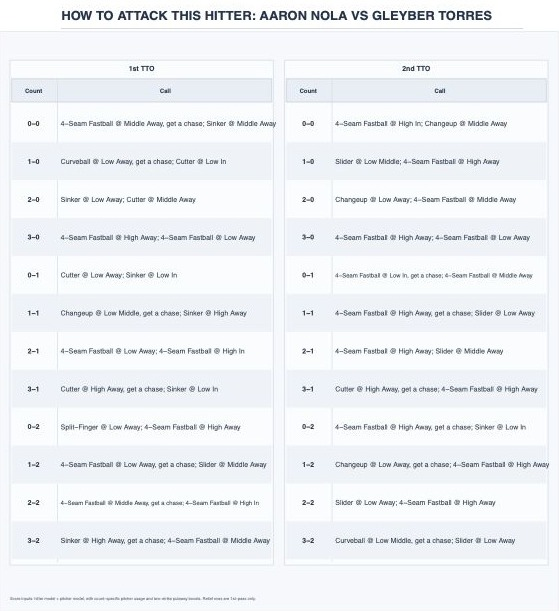

07 · Game planning
MLB Attack:
Pitch Sequencer
A one-page plan for how to attack a hitter. For every count it gives a first-choice pitch and location, plus a backup.
- Built with
- R and Shiny
- Inputs
- Hitter tendencies and the pitcher’s arsenal
- Output
- 12 counts, two times through the order
The sheet
A plan for every count

Find the count, read the first call, keep the second one ready. Calls that are meant to get a chase say so.
The plan changes the second time through the order, because the hitter has already seen the stuff once.
It’s a planning aid, not an autopilot. A coach still weighs how the pitcher feels and what the game needs.